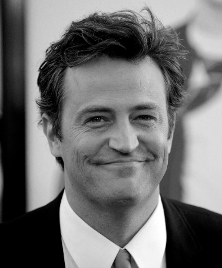

Matthew Langford Perry
Eternizado como Chandler Bing em Friends, transcendeu o papel de um simples ator para se tornar um símbolo de conexão emocional e resiliência. Com seu humor afiado e vulnerabilidade autêntica, Perry transformou Chandler em mais do que um personagem cômico: ele se tornou um reflexo das inseguranças e esperanças de gerações. Cada piada sarcástica, cada olhar hesitante, carregava uma humanidade que resonava profundamente com o público, como se Chandler compreendesse as lutas silenciosas de quem o assistia. Além de Friends, sua versatilidade brilhou em papéis cômicos, como o atrapalhado Oz em The Whole Nine Yards, e em atuações dramáticas, como o complexo Matt Albie em Studio 60 on the Sunset Strip. Sua habilidade como roteirista e produtor, evidente na criação de Mr. Sunshine, e seu ativismo incansável na luta contra o vício, por meio de iniciativas como a Perry House, ampliaram seu legado. Este tributo celebra Matthew Perry: um artista cujo talento multifacetado e autenticidade forjaram laços profundos com o público, demonstrando que o humor, quando entrelaçado à coragem e à humanidade, pode iluminar até os caminhos mais difíceis.
Seu último trabalho foi em 2017, interpretando o papel de Ted Kennedy na minissérie The Kennedys After Camelot. Lançou em 2022 sua autobiografia: 'Friends, Lovers and the Big Terrible Thing'. Segundo o site americano TMZ, Perry foi encontrado morto no dia 28 de outubro de 2023, em uma banheira de hidromassagem de sua casa, em Los Angeles. O ator teria sido vítima de afogamento.
Biografia
Matthew Perry nasceu em Williamstown, EUA, mas cresceu em Ottawa, Canadá, com dupla nacionalidade. Filho do ator John Bennett Perry, que apareceu em Friends como o pai de Joshua, namorado de Rachel, Matthew enfrentou a separação dos pais ainda bebê. Criado pela mãe no Canadá, via o pai na TV, o que despertou seu interesse pelo meio artístico. Na infância, destacou-se no tênis, competindo em torneios nacionais, mas logo percebeu que seu talento estava na atuação. Envolvido em teatro na escola e em institutos, Perry impressionava pela facilidade em fazer rir. Aos 15 anos, mudou-se para Los Angeles para viver com o pai e perseguir a carreira de ator. No início, participou de séries como Charles in Charge e Silver Spoons e atuou no filme A Night in the Life of Jimmy Reardon com River Phoenix. Frustrado com papéis pequenos, escreveu um piloto de série com um amigo, sobre um grupo de amigos, que chamou a atenção da NBC, mas não foi produzido. Após ser escalado para a série L.A.X. 2094, que acabou cancelada, Perry ficou livre para aceitar o papel de Chandler Bing em Friends. Sua habilidade em mesclar humor sarcástico e vulnerabilidade fez de Chandler um ícone, consolidando seu legado.